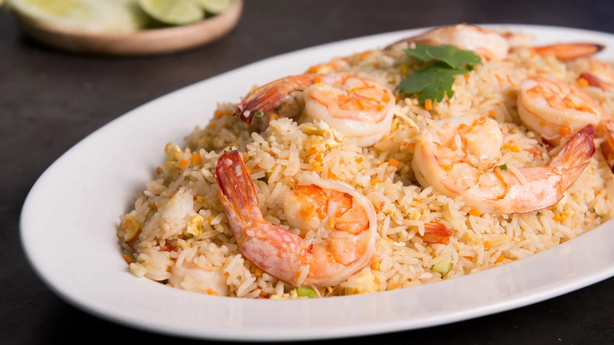
ข้าวผัดกุ้ง
ข้าวผัดกุ้งที่รสชาติเข้มข้น เสิร์ฟพร้อมกุ้งสด ๆ และเครื่องเคียง
อ่านเพิ่มเติม
ผัดไทยกุ้งสด
เส้นจันท์ผัดกับกุ้งและไข่ รสชาติกลมกล่อม และมีกลิ่นหอมจากเครื่องเทศ พร้อมด้วยถั่วฝักยาวและมะนาวสด
อ่านเพิ่มเติม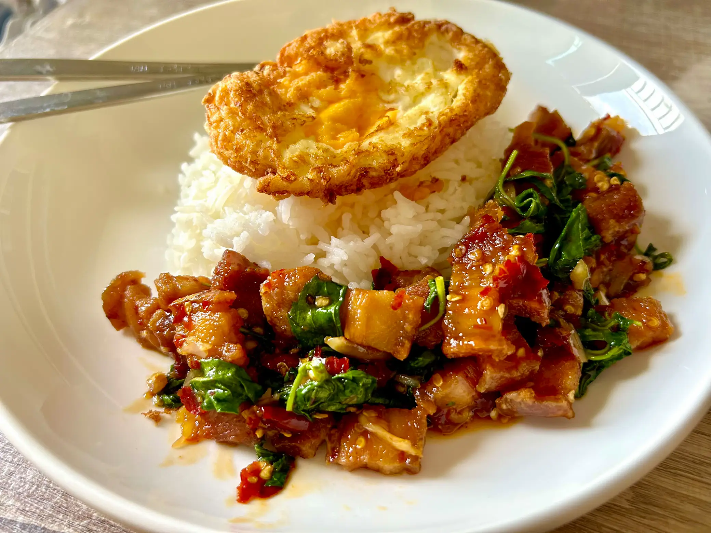
กะเพราหมูกรอบ
ผัดกะเพราหมูกรอบเป็นเมนูที่ผสมผสานระหว่างความกรอบของหมูกรอบและความเผ็ดร้อนจากพริกขี้หนูและใบกะเพรา เนื้อหมูกรอบที่ถูกทอดจนกรอบนอกนุ่มในจะถูกนำมาผัดกับเครื่องเทศอย่างกระเทียม พริกขี้หนู และใบกะเพรา จนหอมฟุ้ง ทะลุออกมาอย่างเข้มข้น รสชาติจะออกเผ็ดร้อน หอมกลิ่นกะเพรา และเค็มจากซอสปรุงรสต่าง ๆ ทุกคำที่ทานจะได้ทั้งความกรอบจากหมูและรสชาติที่กลมกล่อมจากเครื่องปรุง ผัดกะเพราหมูกรอบเหมาะกับการทานคู่กับข้าวสวยร้อน ๆ หรือข้าวเหนียว มื้ออาหารที่ทำง่ายแต่เต็มไปด้วยความอร่อยและกลิ่นหอมที่ไม่เหมือนใคร
อ่านเพิ่มเติม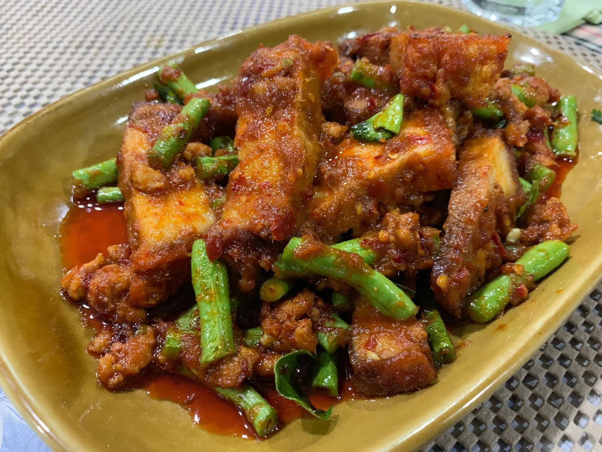
ผัดพริกแกงหมู
ผัดพริกแกง ถั่วฝักยาว รสชาติเข้มข้น กลมกล่อมหอมอร่อย ถั่วฝักยาวกรุบกรอบ ผัดกับพริกแกงและหมูสามชั้นอร่อยเข้ากัน กินกับข้าวสวยร้อนๆ ก็อร่อยมากๆ
อ่านเพิ่มเติม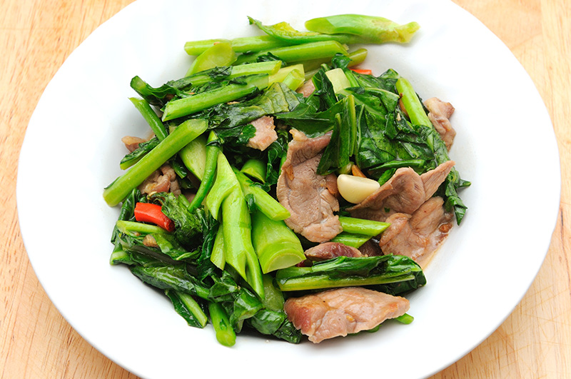
ผัดคะน้า
เป็นผักใบเขียวที่กินได้ทั้งใบไปจนถึงก้าน คะน้ามีหลายชนิดด้วยกัน ไม่ว่าจะเป็นคะน้าไทย และคะน้าฮ่องกง ซึ่งขนาดของต้นและความกรอบ หวาน
อ่านเพิ่มเติม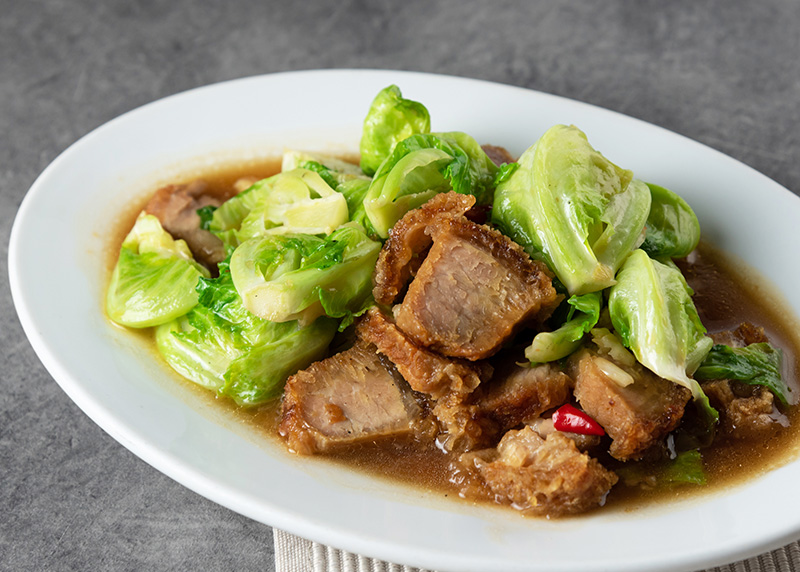
ผัดแขนงหมูกรอบ
ผักแขนง (Baby Cabbage) เป็นผักตระกูลกะหล่ำที่มีขนาดเล็ก ซึ่งหลายคนเข้าใจผิดว่าเป็นต้นอ่อนของคะน้า แต่จริง ๆ แล้วเป็นแขนงที่งอกออกมาใหม่จากต้นของกะหล่ำปลี หรือจะเรียกว่าเป็นต้นกะหล่ำปลีเล็ก ๆ นั่นเอง ผักแขนงมีสีเขียว รสชาติคล้ายผักคะน้า และมีความกรอบ นิยมนำไปประกอบอาหารพวกเมนูผัดผัก เช่น ผัดแขนงน้ำมันหอย ผัดแขนงหมูกรอบ ผัดแขนงปลาเค็ม หรือสามารถเปลี่ยนเป็นเนื้อสัตว์อื่น ๆ ได้ตามชอบ
อ่านเพิ่มเติม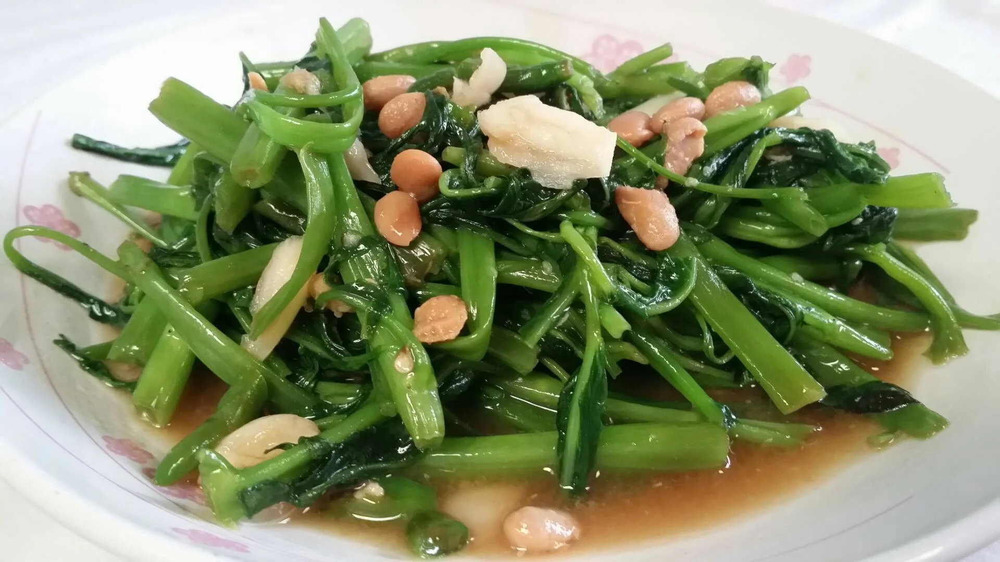
ผัดผักบุ้งไฟแดง
ผัดผักบุ้งไฟแดงเป็นหนึ่งในเมนูผัดยอดนิยมของอาหารไทยที่ทั้งทำง่ายและอร่อย วัตถุดิบหลักคือ "ผักบุ้งจีน" ซึ่งเป็นผักที่มีลำต้นกรอบ ใบเขียวสวย และมีกลิ่นหอมเฉพาะตัว เมื่อผัดกับเครื่องปรุงรสแบบไทย ๆ อย่างน้ำมันหอย ซีอิ๊วขาว น้ำปลา และพริกสด จะได้รสชาติที่เข้มข้น หอม และมีความเผ็ดเล็กน้อยกำลังดี เมนูนี้มักใช้ไฟแรงในการผัดเพื่อให้ผักบุ้งยังคงความสด กรอบ และสีเขียวสดใส ไม่เหี่ยวหรือช้ำเกินไป ทำให้รสสัมผัสของจานนี้เป็นเอกลักษณ์ กินกับข้าวสวยร้อน ๆ หรือเป็นเครื่องเคียงกับอาหารจานอื่นก็เข้ากันได้ดี
อ่านเพิ่มเติม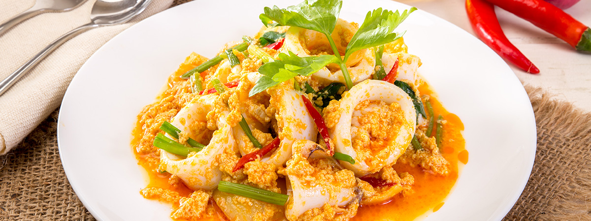
ผัดผงกะหรี่ปลาหมึก
ผัดผงกะหรี่ปลาหมึกเป็นเมนูอาหารไทยที่ได้รับอิทธิพลจากจีน มีรสชาติกลมกล่อม หอมเครื่องเทศจากผงกะหรี่ และมีความเข้มข้นจากนมข้นจืดหรือไข่ที่เคลือบปลาหมึกไว้แบบขลุกขลิก เมนูนี้เป็นที่นิยมในร้านอาหารทะเล เพราะมีรสชาติที่ทั้งเผ็ด หวาน เค็ม และมันในคำเดียว นอกจากนี้ ปลาหมึกยังให้เนื้อสัมผัสหนึบ ๆ เคี้ยวเพลิน ใครที่ชอบอาหารทะเลและรสชาติแบบผัดกะหรี่ต้องลองเมนูนี้!
อ่านเพิ่มเติม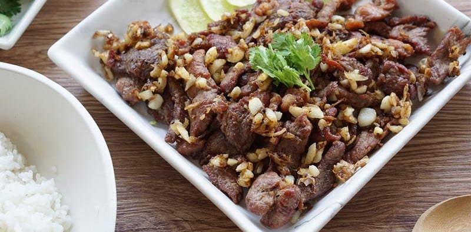
หมูทอดกระเทียม
หมูทอดกระเทียมเป็นหนึ่งในเมนูยอดนิยมของอาหารไทยที่ทำง่าย แต่รสชาติอร่อยจัดจ้าน เนื้อหมูที่หมักจนนุ่มนำไปทอดจนกรอบนอกนุ่มใน หอมกลิ่นกระเทียมเจียวที่ทอดจนเหลืองทอง ยิ่งกัดก็ยิ่งได้สัมผัสถึงความกรอบมันของกระเทียมที่ช่วยเพิ่มรสชาติและกลิ่นหอม เมนูนี้มักมีรสชาติเค็ม ๆ มัน ๆ เล็กน้อยจากการหมักด้วยซอสปรุงรสและน้ำปลา ทำให้เข้ากับข้าวสวยร้อน ๆ ได้อย่างลงตัว นอกจากนี้ยังสามารถเสิร์ฟคู่กับพริกน้ำปลา หรือแตงกวาฝานบาง ๆ เพื่อเพิ่มความสดชื่น เมนูนี้เหมาะสำหรับทุกมื้อ ไม่ว่าจะเป็นมื้อเช้า กลางวัน หรือเย็น เพราะทั้งอร่อย ทำง่าย และถูกใจทั้งเด็กและผู้ใหญ่
อ่านเพิ่มเติม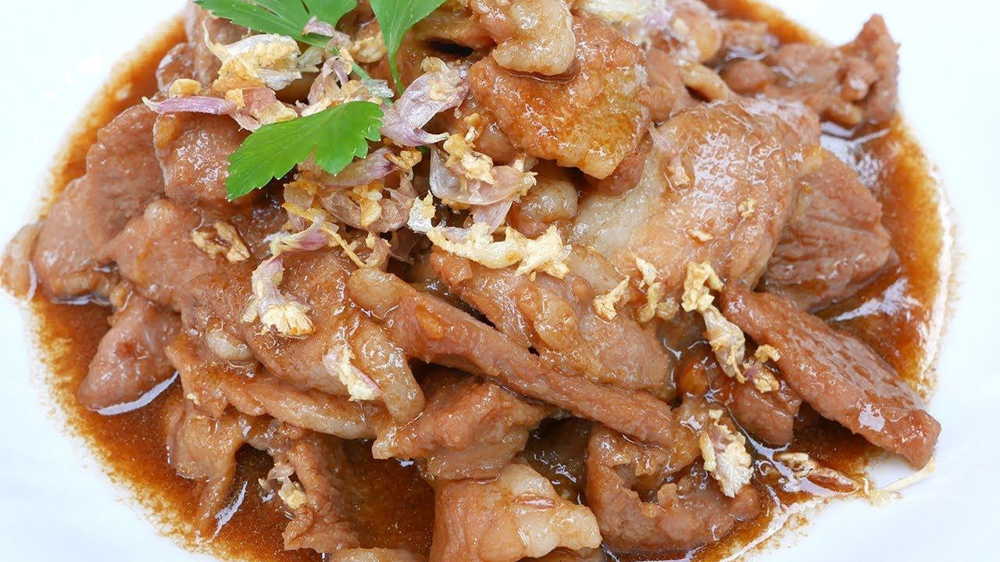
หมูผัดน้ำมันหอย
หมูผัดน้ำมันหอยเป็นเมนูอาหารไทยที่ทำง่ายแต่รสชาติเข้มข้น กลมกล่อม หอมกลิ่นน้ำมันหอยที่ซึมเข้าเนื้อหมูอย่างพอดี เนื้อหมูถูกหั่นเป็นชิ้นบางแล้วนำไปผัดกับกระเทียมให้หอม ตามด้วยซอสปรุงรสต่าง ๆ ที่ช่วยเพิ่มความหวาน เค็ม และความนัวให้เมนูนี้มีรสชาติที่สมดุล เนื้อหมูนุ่ม ๆ ผสมกับซอสที่เคลือบอยู่ทั่วชิ้นหมู ทำให้ทุกคำที่กินมีรสชาติเข้มข้นกำลังดี เมนูนี้ยังสามารถเพิ่มผักต่าง ๆ ได้ตามชอบ เช่น ต้นหอม คะน้า หรือเห็ด เพื่อเพิ่มรสชาติและคุณค่าทางโภชนาการ เสิร์ฟคู่กับข้าวสวยร้อน ๆ ก็ยิ่งอร่อย หรือจะใช้เป็นกับข้าวคู่กับเมนูอื่น ๆ ก็เข้ากันได้ดี เหมาะสำหรับทุกเพศทุกวัย และสามารถทำได้ง่ายในเวลาอันสั้น
อ่านเพิ่มเติม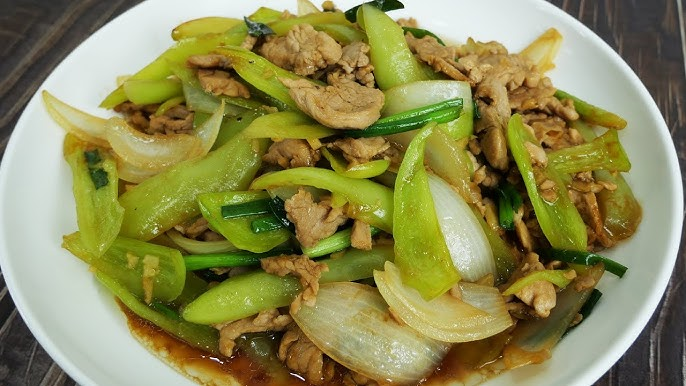
หมูผัดพริกหยวก
หมูผัดพริกหยวกเป็นเมนูอาหารไทยที่มีรสชาติกลมกล่อม หอมหวานจากพริกหยวกที่มีเอกลักษณ์เฉพาะตัว เนื้อหมูนุ่ม ๆ ที่ผัดกับซอสปรุงรสอย่างน้ำมันหอย ซีอิ๊วขาว และน้ำปลา ช่วยเพิ่มความเค็มมันอย่างลงตัว ขณะที่พริกหยวกมีรสหวานอ่อน ๆ และมีกลิ่นหอมช่วยเสริมให้จานนี้มีมิติของรสชาติที่หลากหลาย พริกหยวกยังช่วยเพิ่มสีสันให้จานอาหารดูน่ารับประทานมากขึ้น นอกจากนั้นยังสามารถใส่หอมหัวใหญ่หรือเห็ดลงไปเพื่อเพิ่มความหวานธรรมชาติและเนื้อสัมผัสที่เข้ากัน เมนูนี้เหมาะกับการรับประทานคู่กับข้าวสวยร้อน ๆ หรือจะทำเป็นกับข้าวสำหรับมื้อกลางวันและมื้อเย็นก็อร่อยง่าย ไม่ยุ่งยาก เหมาะกับทุกคนในครอบครัว
อ่านเพิ่มเติม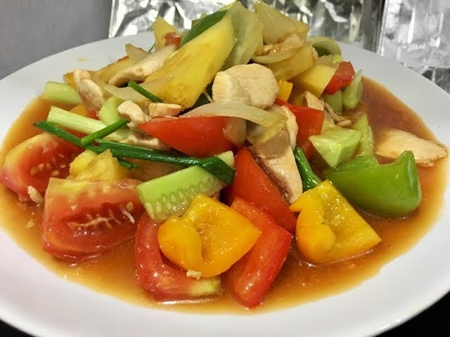
ผัดเปรี้ยวหวานไก่
ผัดเปรี้ยวหวานไก่เป็นเมนูอาหารไทยที่ได้รับอิทธิพลจากอาหารจีน มีรสชาติที่ลงตัวระหว่างความเปรี้ยวจากซอสมะเขือเทศหรือสับปะรด ความหวานจากน้ำตาล และความเค็มกลมกล่อมจากซอสปรุงรส เนื้อไก่นุ่ม ๆ ถูกผัดเข้ากับผักหลากสี เช่น พริกหวาน หอมหัวใหญ่ แตงกวา และมะเขือเทศ ซึ่งช่วยเพิ่มรสสัมผัสที่สดชื่นและสีสันที่น่ารับประทาน ซอสที่เคลือบเนื้อไก่และผักอย่างพอดีทำให้ทุกคำที่กินมีรสชาติที่กลมกล่อม เมนูนี้เป็นที่นิยมในทุกวัยเพราะมีรสชาติไม่จัดจ้านเกินไป เหมาะสำหรับเด็กและผู้ใหญ่ เสิร์ฟคู่กับข้าวสวยร้อน ๆ ก็อร่อยลงตัว หรือจะใช้เป็นเมนูสำหรับงานเลี้ยงหรืองานสังสรรค์ก็เหมาะ เพราะทั้งทำง่ายและถูกใจทุกคน
อ่านเพิ่มเติม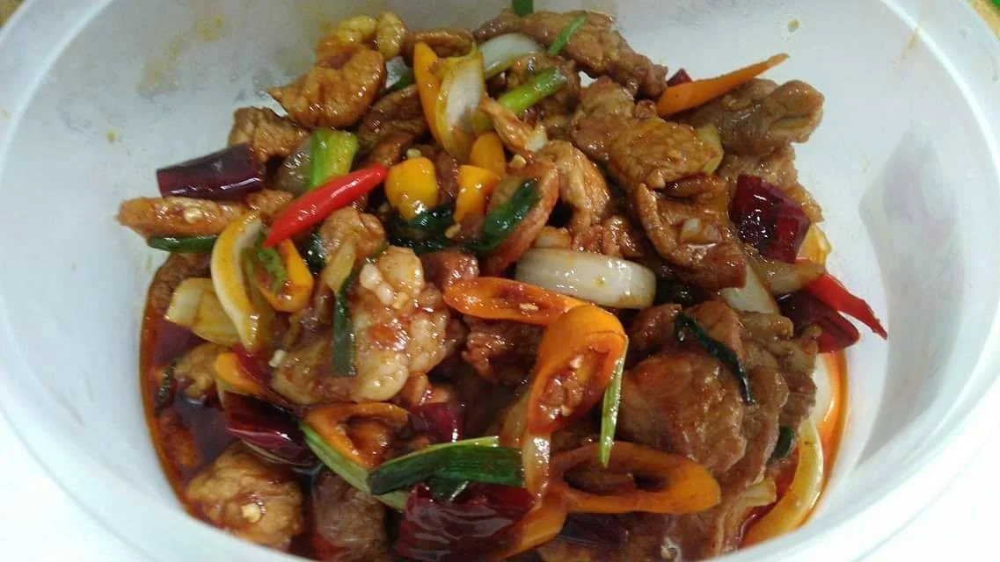
ผัดพริกเผาหมู
ผัดพริกเผาหมูเป็นเมนูอาหารไทยที่มีรสชาติกลมกล่อม เผ็ดหวานจากน้ำพริกเผา หอมมันจากน้ำมันที่คลุกเคล้ากับซอสปรุงรสอย่างลงตัว เนื้อหมูนุ่ม ๆ ถูกผัดจนซึมซับรสชาติของน้ำพริกเผาได้อย่างพอดี เสริมด้วยหอมหัวใหญ่ที่ให้รสหวานธรรมชาติ ต้นหอมและพริกชี้ฟ้าแดงที่ช่วยเพิ่มสีสันและกลิ่นหอม เมนูนี้สามารถปรับระดับความเผ็ดได้ตามใจชอบ และยังเข้ากันได้ดีกับผักต่าง ๆ เช่น คะน้า หรือเห็ด ทำให้จานนี้มีรสชาติและเนื้อสัมผัสที่หลากหลาย เมื่อทานคู่กับข้าวสวยร้อน ๆ จะช่วยชูรสชาติให้อร่อยยิ่งขึ้น ผัดพริกเผาหมูเป็นเมนูที่ทำง่าย ใช้วัตถุดิบไม่เยอะ และเหมาะกับทุกมื้ออาหารของครอบครัว
อ่านเพิ่มเติม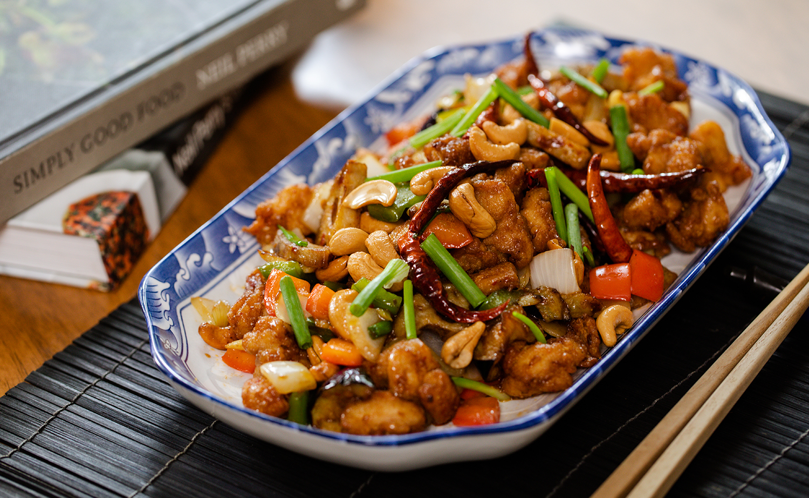
ไก่ผัดเม็ดมะม่วง
ไก่ผัดเม็ดมะม่วงเป็นเมนูยอดนิยมที่มีรสชาติกลมกล่อม หอมมันจากเม็ดมะม่วงหิมพานต์ที่คั่วจนกรอบ ผสมผสานกับเนื้อไก่นุ่ม ๆ ที่ถูกผัดกับซอสปรุงรสจนซึมเข้าเนื้อ ความหวานจากหอมหัวใหญ่และพริกหวานช่วยเพิ่มมิติของรสชาติ ขณะที่พริกแห้งทอดให้ความเผ็ดอ่อน ๆ และกลิ่นหอมเป็นเอกลักษณ์ ทำให้จานนี้มีทั้งความเข้มข้น เคี้ยวเพลิน และไม่เผ็ดจนเกินไป เหมาะกับทุกเพศทุกวัย เสิร์ฟพร้อมข้าวสวยร้อน ๆ จะช่วยชูรสชาติให้โดดเด่นยิ่งขึ้น เป็นเมนูที่ทำง่าย แต่อร่อยระดับภัตตาคาร!
อ่านเพิ่มเติม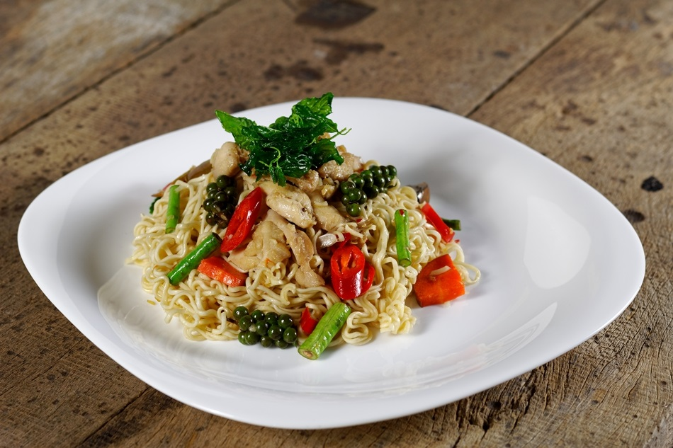
ผัดขี้เมาทะเล
ผัดขี้เมาทะเลเป็นเมนูอาหารไทยที่มีรสชาติเผ็ดร้อนและเข้มข้นจากพริกขี้หนู กระเทียม และใบกะเพราที่ผัดรวมกันจนหอมฟุ้ง เนื้อทะเลอย่างกุ้ง ปลาหมึก หอยนางรม หรือหอยแมลงภู่ถูกผัดกับซอสปรุงรสจนซึมเข้าเนื้อทะเล ทำให้ทุกคำที่ทานมีรสชาติกลมกล่อม ผัดขี้เมาทะเลยังมีกลิ่นหอมของใบกะเพราที่ช่วยเพิ่มความหอมและความสดชื่นให้กับจานนี้ รสชาติที่ได้คือความเผ็ดร้อนจากพริกขี้หนูและความหวานจากหอยและกุ้ง ผสมผสานกันอย่างลงตัว เมนูนี้เสิร์ฟคู่กับข้าวสวยร้อน ๆ หรือข้าวเหนียวก็อร่อย สามารถปรับความเผ็ดตามความชอบของผู้ทานได้ และเป็นเมนูที่เหมาะกับมื้อกลางวันหรือมื้อเย็นที่ต้องการความร้อนแรงและรสชาติจัดจ้าน!
อ่านเพิ่มเติม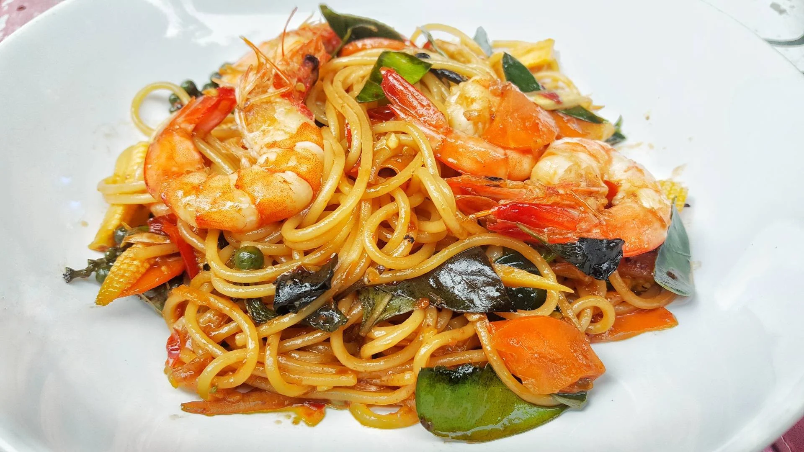
สปาเกตตีผัดขี้เมา
สปาเกตตีผัดขี้เมาคือการนำเส้นสปาเกตตีมาผัดในแบบไทย ๆ ที่มีรสชาติเผ็ดร้อนจากพริกขี้หนูและความหอมจากกระเทียมและใบกะเพรา ผัดกับซอสปรุงรสที่เข้มข้นจนเส้นสปาเกตตีซึมซับรสชาติได้ดี รสชาติเผ็ดหอมจากพริกและกะเพรามีความลงตัว ทานคู่กับเนื้อสัตว์หรือซีฟู้ดตามชอบ เช่น กุ้ง หมู หรือปลาหมึก ก็เพิ่มความอร่อยได้อย่างดี เมนูนี้ผสมผสานระหว่างรสชาติแบบไทยที่จัดจ้านและเส้นพาสต้าที่มีความนุ่ม ทำให้เป็นการผสมผสานระหว่างอาหารอิตาเลียนและไทยได้อย่างลงตัว เสิร์ฟพร้อมเครื่องเคียงอย่างผักสด หรือไข่ดาวก็อร่อยไม่แพ้กัน!
อ่านเพิ่มเติม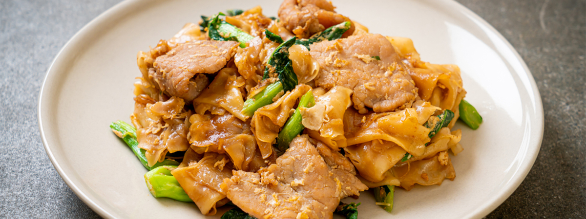
ผัดซีอิ๊วหมู
ผัดซีอิ๊วหมูเป็นเมนูอาหารไทยที่มีรสชาติกลมกล่อมจากซีอิ๊วขาวและซีอิ๊วดำที่ผสมผสานกับน้ำตาลทรายและเครื่องปรุงรสอื่น ๆ ให้รสเค็มหวานที่ลงตัว เนื้อหมูถูกหั่นเป็นชิ้นบาง ๆ และนำไปผัดกับกระเทียมจนหอม ตามด้วยผักต่าง ๆ เช่น คะน้า หรือผักบุ้ง เพื่อเพิ่มรสชาติและเนื้อสัมผัสที่หลากหลาย ผัดซีอิ๊วหมูมักจะมีรสชาติที่เข้มข้นจากการใช้ซีอิ๊ว และการผัดในกระทะร้อน ๆ ที่ทำให้ซอสเคลือบเนื้อหมูได้ทั่วถึง ทานคู่กับข้าวสวยร้อน ๆ จะยิ่งช่วยเพิ่มรสชาติให้สมบูรณ์แบบ นอกจากนี้ เมนูนี้ยังทำได้ง่ายและรวดเร็ว เหมาะสำหรับทุกมื้ออาหาร และถูกใจทั้งเด็กและผู้ใหญ่
อ่านเพิ่มเติม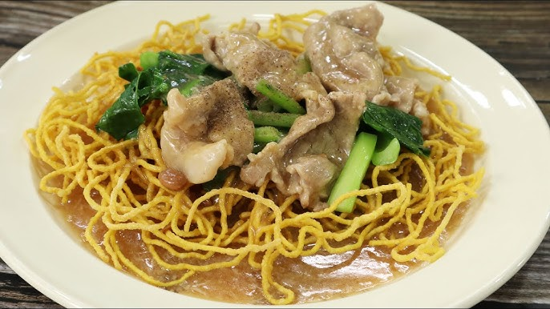
ราดหน้าหมี่กรอบ
ราดหน้าหมี่กรอบเป็นเมนูที่มีความพิเศษตรงที่ใช้เส้นหมี่กรอบเป็นส่วนผสมหลัก เส้นหมี่กรอบที่ทอดจนกรอบนอกนุ่มใน จะถูกนำมาราดด้วยน้ำราดหน้าที่ทำจากซีอิ๊วขาว ซอสหอยนางรม และน้ำสต๊อกไก่หรือหมู จนได้รสชาติที่กลมกล่อม หวาน เค็ม และมัน เมื่อราดน้ำราดหน้าลงบนหมี่กรอบ รสชาติจะซึมเข้าไปในเส้นหมี่ แต่ยังคงความกรอบในบางส่วน การใส่เนื้อสัตว์ เช่น ไก่ หมู หรือกุ้ง และผักสด ๆ ช่วยเพิ่มสีสันและรสชาติที่สมดุล ทำให้ราดหน้าหมี่กรอบเป็นเมนูที่อร่อยและน่าทานอย่างมาก เสิร์ฟพร้อมกับน้ำจิ้มพริกน้ำส้มก็ยิ่งเพิ่มรสชาติเผ็ดและเปรี้ยวที่ช่วยเสริมให้รสชาติลงตัว เป็นเมนูที่ทำง่ายแต่สามารถอร่อยได้ทุกมื้อ!
อ่านเพิ่มเติม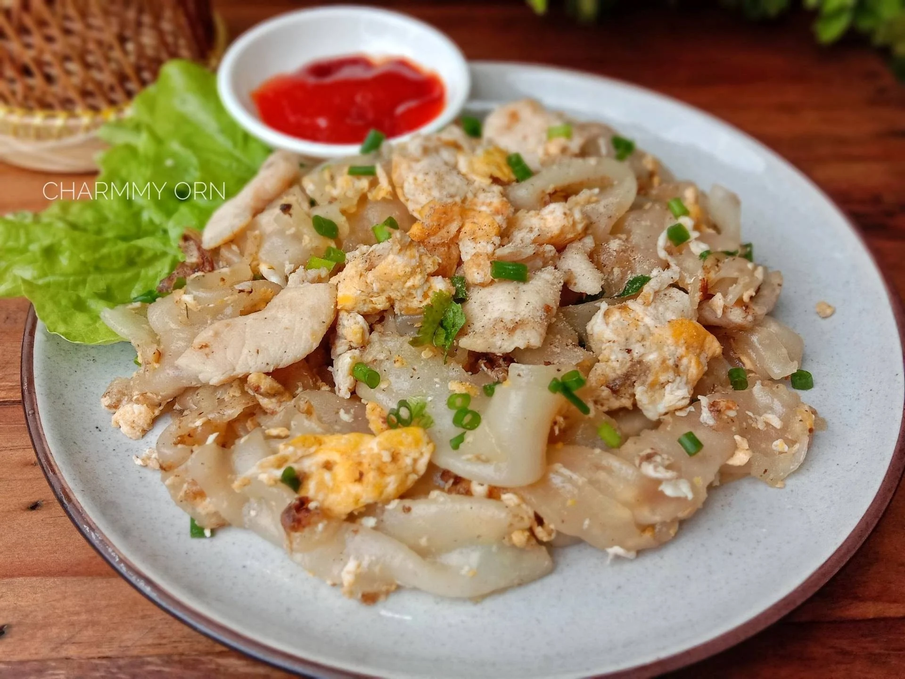
ก๋วยเตี๋ยวคั่วไก่
ก๋วยเตี๋ยวคั่วไก่เป็นเมนูที่มีความพิเศษตรงที่เส้นก๋วยเตี๋ยวจะถูกคั่วในกระทะจนกรอบนอกนุ่มใน รสชาติจะออกเค็มหวานจากการใช้ซอสปรุงรส ซีอิ๊วขาว และน้ำมันหอย ไก่ที่หั่นเป็นชิ้นบาง ๆ นำมาคั่วจนสุกและมีความหอมกลิ่นกระทะ รสชาติกลมกล่อม ผสมกับผักต่าง ๆ เช่น กะหล่ำปลีและต้นหอมที่ให้ความสดชื่นและความกรอบจากการผัด เส้นก๋วยเตี๋ยวที่คั่วออกมาได้สีน้ำตาลเข้ม มีรสชาติอร่อยจนไม่สามารถหยุดทานได้ นอกจากนี้ยังสามารถเพิ่มไข่ลงไปทำให้รสชาติยิ่งอร่อยและครีมมี่ขึ้นอีก เมนูนี้เหมาะสำหรับมื้อกลางวันหรือมื้อเย็นที่ต้องการความอร่อยแบบไม่ซ้ำใคร
อ่านเพิ่มเติม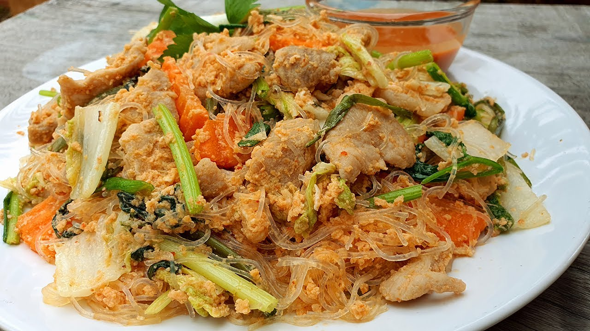
สุกี้แห้งหมู
สุกี้แห้งหมูเป็นเมนูอาหารที่มีรสชาติกลมกล่อมจากการใช้ซอสสุกี้ที่เคลือบเนื้อหมูและผักต่าง ๆ ให้รสเค็มหวานอ่อน ๆ โดยไม่ต้องใช้น้ำซุป เนื้อหมูที่หั่นบาง ๆ จะถูกผัดจนสุกและเข้ากับซอสสุกี้ที่ทำจากซอสหอยนางรม ซีอิ๊วขาว และน้ำตาลทราย ทำให้ได้รสชาติที่หวาน เค็ม และกลมกล่อม ผักต่าง ๆ เช่น ผักกาดขาว คะน้า หรือแครอท จะช่วยเพิ่มความสดชื่นและเนื้อสัมผัสที่หลากหลาย เสิร์ฟพร้อมกับไข่ดาวหรือไข่ลวก เพื่อเพิ่มความนุ่มและรสชาติที่ครีมมี่ ทำให้สุกี้แห้งหมูเป็นเมนูที่ทำง่ายและอร่อย ทำให้เหมาะกับมื้อกลางวันหรือมื้อเย็นที่ไม่ซับซ้อน
อ่านเพิ่มเติม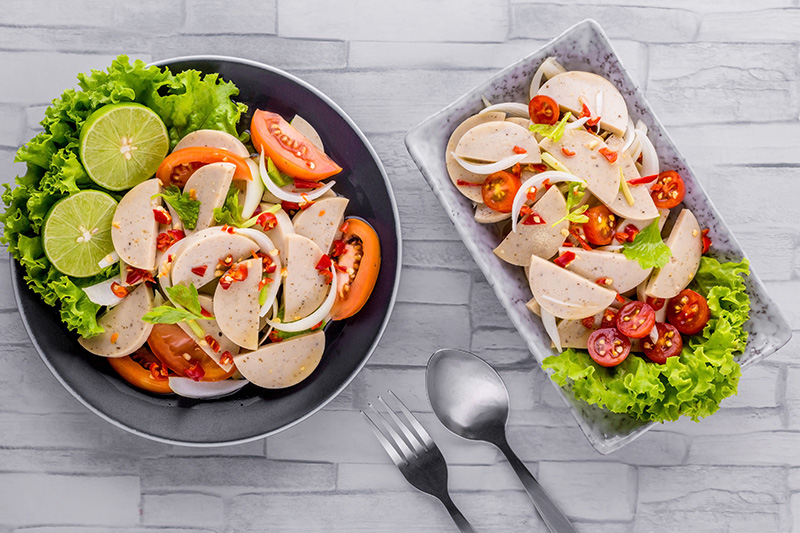
ยำหมูยอ
ยำหมูยอเป็นเมนูที่มีกลิ่นหอมสดชื่นจากสมุนไพรไทย เช่น ตะไคร้ พริกขี้หนู และใบมะกรูด ผสมผสานกับรสชาติเผ็ดเปรี้ยวจากน้ำยำที่ทำจากน้ำมะนาว น้ำปลา และน้ำตาลปี๊บ หมูยอที่หั่นบาง ๆ จะถูกคลุกเคล้ากับน้ำยำจนซึมเข้าเนื้อ เพิ่มรสชาติความอร่อยให้เต็มที่ การใส่ผักสด ๆ เช่น หอมแดง มะเขือเทศ และแตงกวาช่วยเพิ่มความกรอบและความสดชื่น ยำหมูยอเป็นเมนูที่ทานง่าย ทำเร็ว และเหมาะกับการทานคู่กับข้าวสวยหรือข้าวเหนียว เมนูนี้เป็นทั้งอาหารว่างและกับข้าวได้ดี ทานเย็น ๆ ก็อร่อย เผ็ดแซ่บถูกใจ!
อ่านเพิ่มเติม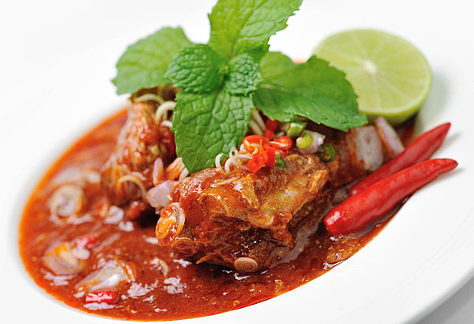
ยำปลากระป๋อง
ยำปลากระป๋องเป็นเมนูยำที่มีรสชาติเผ็ดเปรี้ยวจากน้ำมะนาวและพริกขี้หนู ความเค็มจากน้ำปลาและน้ำตาลปี๊บที่จะช่วยปรับสมดุลรสชาติ ปลากระป๋อที่นำมาปรุงจะมีเนื้อที่นุ่ม รสหวานธรรมชาติ โดยการยำจะมีผักสด ๆ เช่น หอมแดง มะเขือเทศ แตงกวา และใบสะระแหน่ ซึ่งช่วยเพิ่มความสดชื่นและกรอบกรุบในการทาน รสชาติเปรี้ยวจากมะนาวและเผ็ดจากพริกทำให้ยำปลากระป๋อเป็นเมนูที่ทานแล้วรู้สึกสดชื่นและตื่นเต้นในทุกคำที่ทาน เหมาะเป็นทั้งอาหารว่างหรือกับข้าวคู่กับข้าวสวยร้อน ๆ หรือข้าวเหนียว เป็นเมนูที่อร่อยและทำง่าย ทานได้ทั้งครอบครัว
อ่านเพิ่มเติม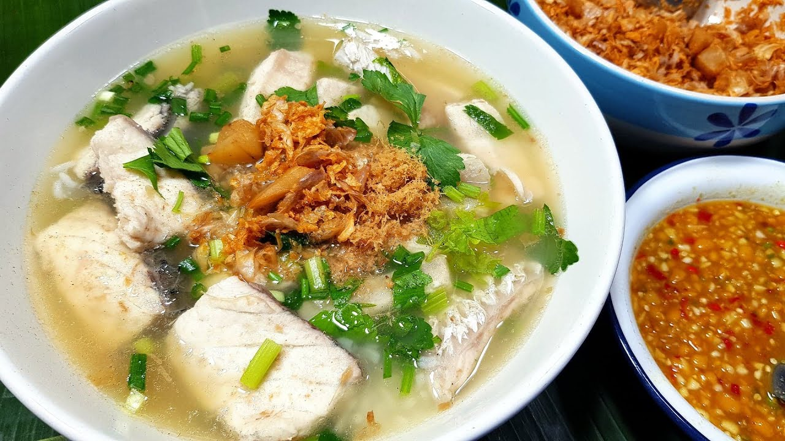
ข้าวต้มปลา
ข้าวต้มปลาเป็นเมนูที่มีรสชาติกลมกล่อมและเบาๆ เหมาะกับมื้อเช้าหรือมื้อเบาๆ เนื้อปลาที่ใช้มักเป็นปลานิล ปลาช่อน หรือปลาทะเล ซึ่งจะให้เนื้อที่นุ่มและหวานตามธรรมชาติ การต้มข้าวในน้ำซุปที่ทำจากกระดูกหมูหรือปลาเอง ทำให้ได้ซุปที่อร่อยและกลมกล่อม ข้าวต้มจะมีรสหวานจากปลาผสมกับความเค็มของน้ำปลาและซีอิ๊วขาว ทำให้รสชาติสมดุล เติมความหอมด้วยขิงสดและต้นหอม โรยหน้าด้วยผักชีและกระเทียมเจียวเพื่อเพิ่มกลิ่นหอมและรสชาติที่น่ากิน ข้าวต้มปลานี้อร่อยทั้งร้อน ๆ หรือจะทานเย็นก็ยังดี เป็นเมนูที่ทำง่ายและเหมาะกับทุกคนในครอบครัว
อ่านเพิ่มเติม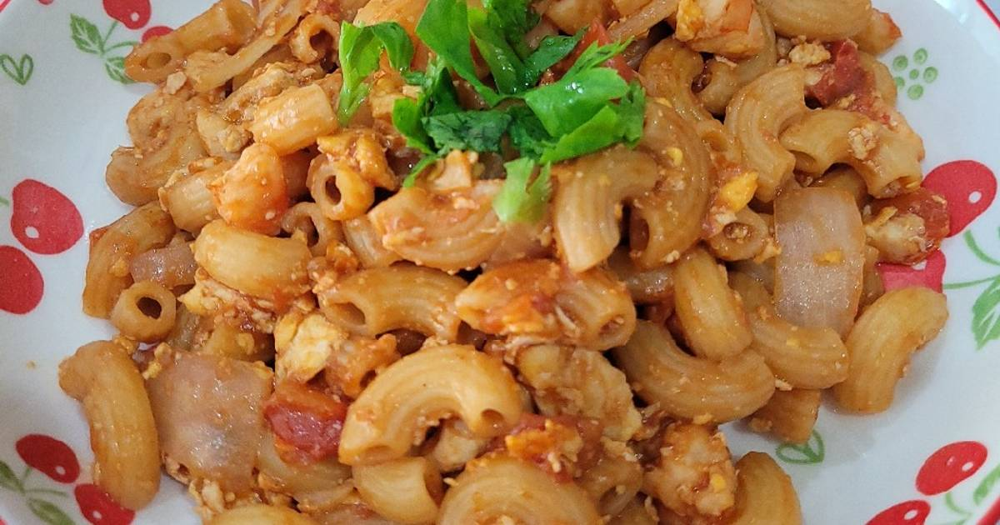
ผัดมะกะโรนีไก่
ผัดมะกะโรนีไก่เป็นเมนูที่ผสมผสานระหว่างเส้นมะกะโรนีและเนื้อไก่ที่มีรสชาติกลมกล่อม เส้นมะกะโรนีที่ผ่านการต้มจนสุกจะถูกผัดในกระทะกับเนื้อไก่หั่นชิ้นเล็ก ๆ จนสุกและกลมกล่อมไปกับซอสต่าง ๆ เช่น ซอสมะเขือเทศ ซอสหอยนางรม หรือซอสปรุงรสต่าง ๆ จนได้รสชาติที่หวาน เค็ม และมัน เสริมด้วยผักสดอย่างแครอท พริกหวาน หรือถั่วลันเตาเพื่อเพิ่มรสชาติและเนื้อสัมผัสที่หลากหลาย การใส่ชีสขูดหรือพาเมซานลงไปในขั้นตอนสุดท้ายก็ทำให้ผัดมะกะโรนีไก่มีความหอมมันและอร่อยยิ่งขึ้น เหมาะสำหรับมื้อกลางวันหรือมื้อเย็นที่ทำง่ายและอิ่มท้อง
อ่านเพิ่มเติม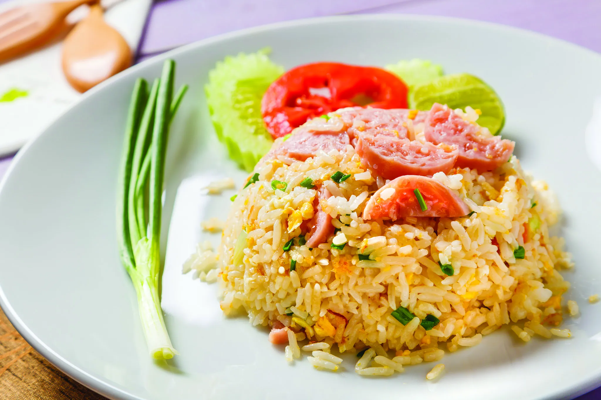
ข้าวผัดแหนม
ข้าวผัดแหนมเป็นเมนูข้าวผัดที่มีรสชาติพิเศษจากแหนมที่มีกลิ่นหอมและรสเปรี้ยวจากการหมัก เนื้อแหนมที่หั่นเป็นชิ้นเล็ก ๆ จะถูกผัดกับข้าวสวยจนหอมกระจาย และกลมกล่อมไปกับซอสปรุงรสต่าง ๆ เช่น ซอสหอยนางรม น้ำปลา และพริกขี้หนู เสริมด้วยผักต่าง ๆ เช่น หอมแดงและต้นหอมที่จะช่วยเพิ่มความสดชื่นและกรอบในแต่ละคำ การทานข้าวผัดแหนมทำให้ได้ทั้งรสเปรี้ยวจากแหนมและเผ็ดจากพริก รวมถึงความหอมของกระเทียมและผักที่ผสมผสานกันอย่างลงตัว สามารถเสิร์ฟคู่กับไข่ดาวหรือไข่ลวกเพิ่มความอร่อยได้อีก เป็นเมนูที่ทำง่ายและเหมาะกับการทานเป็นมื้อกลางวันหรือมื้อเย็น
อ่านเพิ่มเติม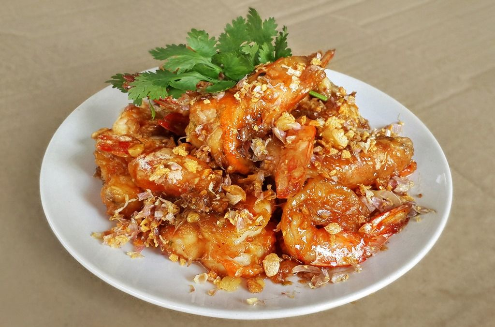
กุ้งกระเทียม
กุ้งกระเทียมเป็นเมนูที่ทำง่ายแต่มากด้วยรสชาติ เนื้อกุ้งสด ๆ ที่ถูกทอดจนกรอบนอกและนุ่มใน จะถูกคลุกเคล้ากับกระเทียมที่ผัดจนหอม และซอสปรุงรสอย่างซอสหอยนางรมและซีอิ๊วขาวให้รสเค็มหวานเข้ากันได้ดี การใช้กระเทียมเจียวเป็นส่วนผสมหลักช่วยเพิ่มความหอมและรสชาติให้กุ้งได้อย่างดี เสิร์ฟกับข้าวสวยร้อน ๆ หรือข้าวเหนียวก็อร่อยอย่างลงตัว กุ้งกระเทียมเป็นเมนูที่เหมาะสำหรับทั้งมื้อกลางวันหรือมื้อเย็นที่ต้องการความอร่อยและทำง่ายในเวลาไม่นาน
อ่านเพิ่มเติม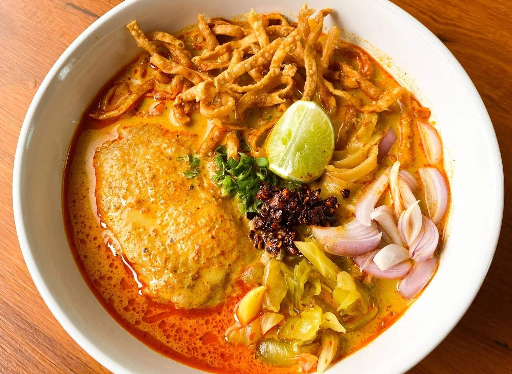
ข้าวซอย
ข้าวซอยเป็นเมนูอาหารภาคเหนือของไทยที่มีรสชาติกลมกล่อมและหอมเครื่องแกง รสชาติของข้าวซอยจะออกหวานจากกะทิและเค็มจากน้ำปลา มีความเผ็ดอ่อน ๆ จากพริกแกงข้าวซอยที่ทำจากพริกแห้ง ขมิ้น กระเทียม และเครื่องเทศต่าง ๆ น้ำซุปข้าวซอยจะมีความข้นจากกะทิและเครื่องเทศที่เคี่ยวจนได้รสชาติที่เข้มข้นและหอม ในการเสิร์ฟจะมีเส้นข้าวซอยที่นุ่มและเนื้อไก่ที่ต้มจนสุกนุ่ม โรยด้วยหอมแดงทอดกรอบและพริกป่นเพิ่มความเผ็ด เมนูนี้สามารถเสิร์ฟคู่กับผักดอง เช่น ผักกาดดองหรือต้นหอมสด เพื่อเพิ่มความเปรี้ยวและสดชื่นให้กับรสชาติ ข้าวซอยเป็นเมนูที่เหมาะสำหรับทั้งมื้อกลางวันและมื้อเย็น ตอบโจทย์ความอร่อยในทุกโอกาส
อ่านเพิ่มเติม
แกงฮังเล
แกฮังเลเป็นเมนูอาหารภาคเหนือของไทยที่มีรสชาติเข้มข้นและจัดจ้าน โดยเนื้อหมูหรือเนื้อสัตว์อื่น ๆ จะถูกต้มในน้ำซุปที่มีส่วนผสมของเครื่องเทศหอม ๆ เช่น ขมิ้น กระเทียม และพริกไทยดำ สารสกัดจากน้ำมะขามเปียกและน้ำตาลปี๊บจะช่วยเพิ่มรสชาติหวานและเปรี้ยวให้กับน้ำซุป เมื่อนำเนื้อไปเคี่ยวจนเปื่อย จะซึมซับรสชาติจากเครื่องเทศและน้ำซุปได้ดี ทำให้แกฮังเลมีรสชาติที่ทั้งเผ็ด รสเปรี้ยว และหวานที่ลงตัว ตัดกับความมันจากน้ำมันหมูหรือกระดูกหมูที่ใช้ในการต้ม เสิร์ฟกับข้าวสวยร้อน ๆ หรือข้าวเหนียว เพิ่มความอร่อยได้อย่างดี แกฮังเลเป็นเมนูที่มีรสชาติอร่อยและทำให้ทานง่าย เหมาะสำหรับมื้อกลางวันหรือมื้อเย็น
อ่านเพิ่มเติม